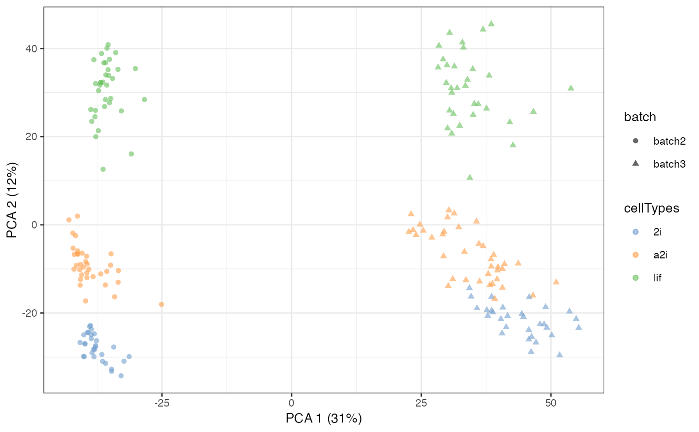
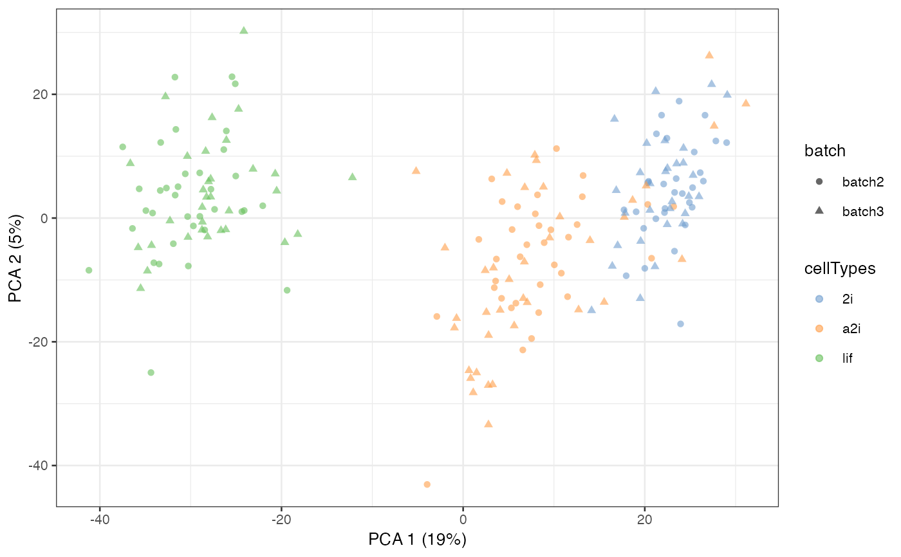

Merge single-cell RNA-seq data from different batches and experiments leveraging (pseudo)-replicates and control genes.
scMerge(
sce_combine,
ctl = NULL,
kmeansK = NULL,
exprs = "logcounts",
hvg_exprs = "counts",
batch_name = "batch",
marker = NULL,
marker_list = NULL,
ruvK = 20,
replicate_prop = 1,
cell_type = NULL,
cell_type_match = FALSE,
cell_type_inc = NULL,
BSPARAM = ExactParam(),
svd_k = 50,
dist = "cor",
WV = NULL,
WV_marker = NULL,
BPPARAM = SerialParam(),
return_all_RUV = FALSE,
assay_name = NULL,
plot_igraph = TRUE,
verbose = FALSE
)A SingleCellExperiment object contains the batch-combined matrix with batch info in colData.
A character vector of negative control. It should have a non-empty intersection with the rows of sce_combine.
A vector indicates the kmeans's K for each batch. The length of kmeansK needs to be the same as the number of batch.
A string indicating the name of the assay requiring batch correction in sce_combine, default is logcounts.
A string indicating the assay that to be used for highly variable genes identification in sce_combine, default is counts.
A character indicating the name of the batch column, default to "batch"
An optional vector of markers, to be used in calculation of mutual nearest cluster. If no markers input, highly variable genes will be used instead.
An optional list of markers for each batch, which will be used in calculation of mutual nearest cluster.
An optional integer/vector indicating the number of unwanted variation factors that are removed, default is 20.
A number indicating the ratio of cells that are included in pseudo-replicates, ranges from 0 to 1. Default to 1.
An optional vector indicating the cell type information for each cell in the batch-combined matrix. If it is NULL, pseudo-replicate procedure will be run to identify cell type.
An optional logical input for whether to find mutual nearest cluster using cell type information.
An optional vector indicating the indices of the cells that will be used to supervise the pseudo-replicate procedure.
A BiocSingularParam class object from the BiocSingular package is used. Default is ExactParam().
If BSPARAM is set to RandomParam or IrlbaParam class from BiocSingular package, then
svd_k will be used to used to reduce the computational cost of singular value decomposition. Default to 50.
The distance metrics that are used in the calculation of the mutual nearest cluster, default is Pearson correlation.
A optional vector indicating the wanted variation factor other than cell type info, such as cell stages.
An optional vector indicating the markers of the wanted variation.
A BiocParallelParam class object from the BiocParallel package is used. Default is SerialParam().
If FALSE, then only returns a SingleCellExperiment object with original data and one normalised matrix.
Otherwise, the SingleCellExperiment object will contain the original data and one normalised matrix for each ruvK value. In this latter case, assay_name must have the same length as ruvK.
The assay name(s) for the adjusted expression matrix(matrices). If return_all_RUV = TRUE assay_name must have the same length as ruvK.
If TRUE, then during the un/semi-supervised scMerge, igraph plot will be displayed
If TRUE, then all intermediate steps will be shown. Default to FALSE.
Returns a SingleCellExperiment object with following components:
assays: the original assays and also the normalised matrix
metadata: containing the ruvK vector, ruvK_optimal based on F-score, and the replicate matrix
## Loading example data
data('example_sce', package = 'scMerge')
## Previously computed stably expressed genes
data('segList_ensemblGeneID', package = 'scMerge')
## Running an example data with minimal inputs
sce_mESC <- scMerge(sce_combine = example_sce,
ctl = segList_ensemblGeneID$mouse$mouse_scSEG,
kmeansK = c(3, 3),
assay_name = 'scMerge')
#> Dimension of the replicates mapping matrix:
#> [1] 200 3
#> Step 2: Performing RUV normalisation. This will take minutes to hours.
#> scMerge complete!
sce_mESC = scater::runPCA(sce_mESC, exprs_values = "logcounts")
scater::plotPCA(sce_mESC, colour_by = 'cellTypes', shape = 'batch')

sce_mESC = scater::runPCA(sce_mESC, exprs_values = 'scMerge')
scater::plotPCA(sce_mESC, colour_by = 'cellTypes', shape = 'batch')
